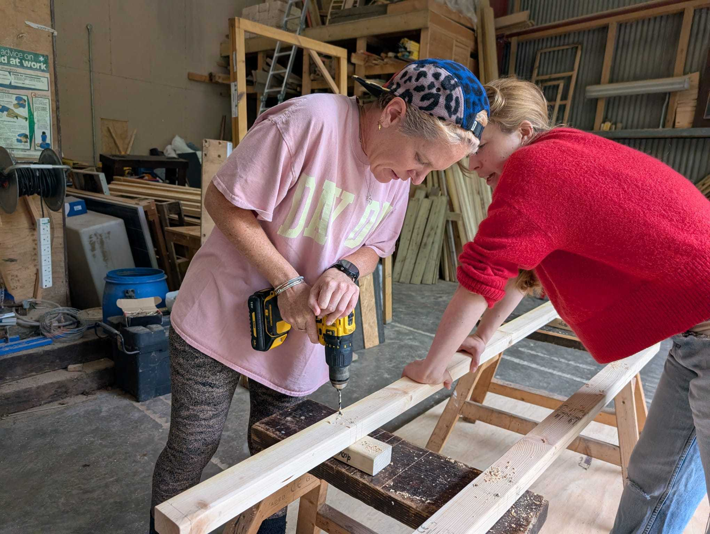
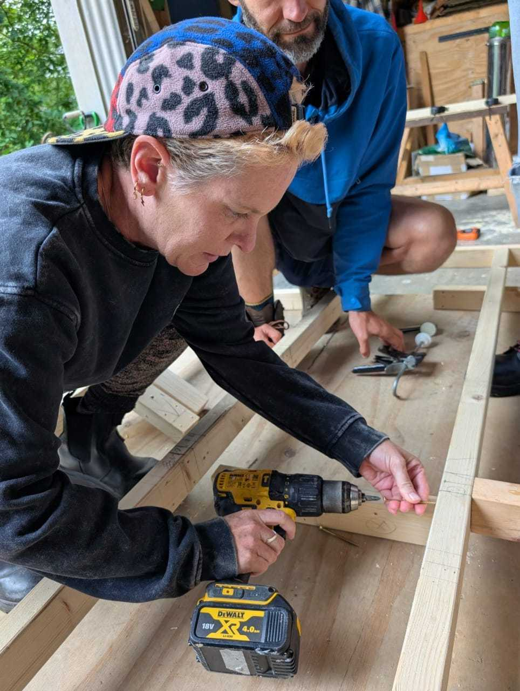

An introduction to making things that don't require a Wifi connection.
What I tried
I've spent much of my working life building things with code. Things that live on screens, run on servers and occasionally break for reasons that make absolutely no sense.
Recently, I've found myself wanting to build something a little more tangible. Something I can touch. The challenge was to start with a pile of timber and construct the shell of a Tiny House. From the floor structure through to the walls, window and door openings and finally the roof. This was going to be attempted over a four day period. No interiors, insulation installation or finishing touches. Just the bones of a building.
Armed with enthusiasm, curiosity and a fairly limited collection of practical building skills, I was about to discover just how much thinking goes into something that looks deceptively simple.
What I noticed
The first surprise was how much happens before you even get to build a wall. We started with the floor, learning to interpret plans and understand the importance of setting out timber accurately.
One of my first lessons was understanding 600 mm centres. A rather small, but important distinction when you're holding a tape measure and wondering why nothing quite adds up. We learned about basic carpentry tools, the usefulness of noggins and the different ways timber can be connected. Nails, screws and structural timber screws all have their place. Choosing the right fixing involves a little more thought than grabbing whatever's closest.
From there, we moved on to constructing the walls, framing the openings for a window and door and building the roof. What surprised me most was how much construction is about things you don't necessarily see. I found myself more drawn to wanting to expose the connections and wood effects
Alongside the practical work, we discussed damp-proof courses, air gaps and the importance of managing moisture. I'd never given too much thought to the idea that a building needs to be able to dry out. Keeping water out is only part of the story; preventing moisture from becoming trapped is equally important.
Then there was insulation. From conventional plastic-based products to cotton, denim and materials made from recycled bottles, there's a surprising range of options, each with its own advantages and compromises. We didn't get as far as installing any of these materials, but the discussions made me realise just how much thought goes into what sits behind the finished walls.
Suddenly, a wall wasn't just a wall. It was part of a much bigger system.
What I'm learning
I'm beginning to appreciate that building something well is as much about understanding why as knowing how. Why are the timbers spaced that way? Why use a particular fixing? Why leave an air gap? What happens if moisture gets trapped? And why does something that looks perfectly square turn out not to be?
There's also a surprising connection to software engineering. Both involve planning, understanding dependencies and thinking about how individual components work together. Get the foundations wrong and everything built on top becomes more complicated. Except in construction, those foundations are rather more literal.
Next time
My biggest priority is becoming more confident with measurements, construction drawings and setting out. I want to be able to look at a plan, understand how the pieces fit together and translate those measurements into something physical without constantly second-guessing myself.
I'd also like to develop my joinery skills and spend more time understanding the tools and techniques behind good timber construction.
This course has opened the door to something I want to explore further, from woodworking and traditional timber framing to perhaps eventually wooden boat building. Starting with a pile of timber and ending with the shell of a building feels like a pretty good beginning.

